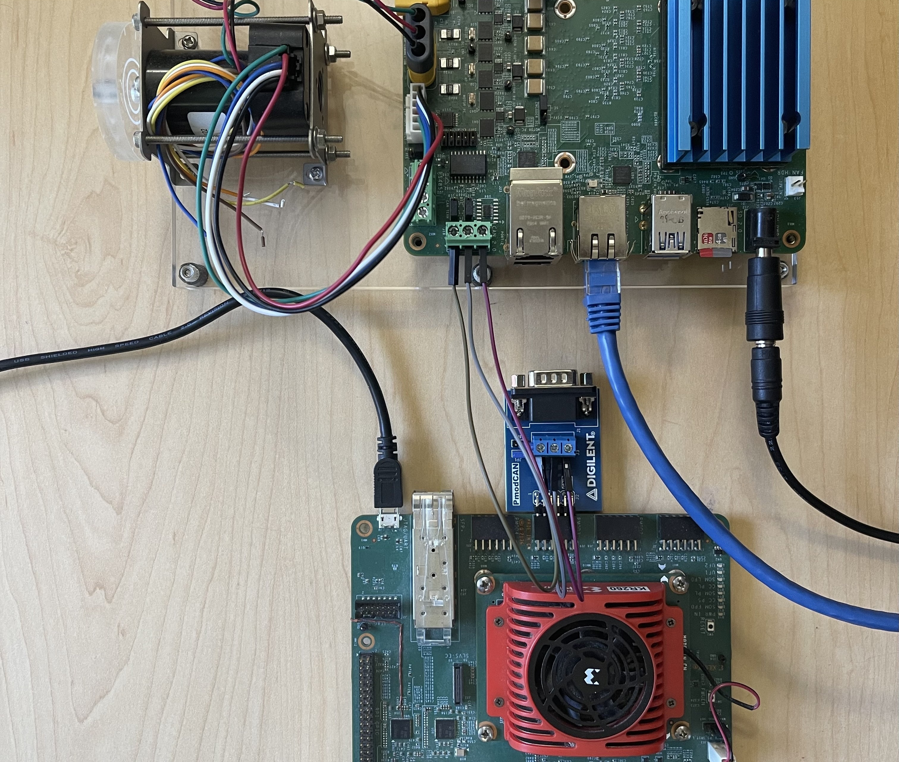
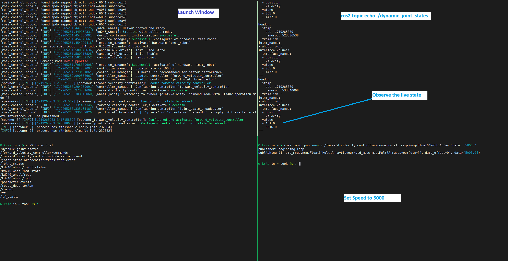

Kria™ KD240 Drives Starter Kit
|
Setting up the Board and Application Deployment |
Board Setup and Application Deployment¶
Introduction¶
This document shows how to set up the board, and run the motor control application.
This guide is targeted for Ubuntu® 22.04 and the AMD 2023.1 toolchain.
Prerequisite¶
Hardware Requirements¶
KD240 power supply and adapter (included with the KD240 Drives Starter Kit)
12V AC adapter for the KD240 Starter Kit and 24V AC adapter for the Motor Accessory Kit
USB-A to micro-B cable (included with the KD240 Drives Starter Kit)
MicroSD card (32 GB card is included with the KD240 Drives Starter Kit)
CAT6 Ethernet cable
Host machine with display
Hardware Setup¶

Connect the USB cable from the host machine to the J4 UART/JTAG interface on the board.

Connect the Ethernet cable from J24 to your local network with DHCP enabled to install the Linux packages.

Connect a 12V power supply to the J12 DC jack.

Connect a 24V power supply to the J29 DC link connector.

Connect the encoder header pins to the J42 QEI connector. Ensure J44 is in the “SE” selection.

Connect the motor input to a J32 3-phase inverter connector.

Connect the One Wire Temperature Sensor to J47 Temp Sensor connector. Red connects to 3-5V, Blue/Black connects to ground and Yellow/White is Sense(data)

Only for CANopen server interface: Connect PMOD-CAN module to PMOD3 on the KR260. Connect CAN cables from J18 on the KD240 to the PMOD-CAN module (CANL to CANL, CANH to CANH, GND to GND).

Tested Artifacts¶
Testing was performed with the following artifacts:
KD240 platform Artifacts¶
| Component | Version |
|---|---|
| Boot Firmware | K24-BootFW-01.01 |
| Linux Kernel | 5.15.0-1030-xilinx-zynqmp |
| xlnx-firmware-kd240-motor-ctrl | 0.12-0xlnx2 |
To obtain the latest Linux image and boot firmware, refer to the Kria Wiki.
Application Packages¶
| Package | Version |
|---|---|
| xlnx-app-kd240-foc-motor-ctrl | 0.4-0xlnx1 |
Initial Setup¶
Go through Booting Kria Starter Kit Linux to complete the minimum setup required to boot Linux before continuing with instructions on this page.
Get the latest motor control application and firmware package:
Download the firmware.
Search package feed for packages compatible with the KD240.
ubuntu@kria:~$ sudo apt search xlnx-firmware-kd240 Sorting... Done Full Text Search... Done xlnx-firmware-kd240-bist/jammy,now 0.10-0xlnx1 arm64 [installed] FPGA firmware for Xilinx boards - kd240 bist application xlnx-firmware-kd240-motor-ctrl-qei/jammy,now 0.10-0xlnx1 arm64 [installed] FPGA firmware for Xilinx boards - kd240 motor-ctrl-qei application
Install the firmware binaries.
sudo apt install xlnx-firmware-kd240-motor-ctrl-qei
Install the motor control application.
# Add lely PPA for lely-core libraries sudo add-apt-repository ppa:lely/ppa sudo apt-get update sudo apt install xlnx-app-kd240-foc-motor-ctrl
Install lm-sensors package for One Wire Temperature sensor
sudo apt install lm-sensors
Load the Firmware¶
Show the list and status of available application firmware.
After installing the firmware, execute xmutil listapps to verify that it is captured under the listapps function and to have dfx-mgrd rescan and register all accelerators in the firmware directory tree.
ubuntu@kria:~$ sudo xmutil listapps Accelerator Accel_type Base Base_type #slots(PL+AIE) Active_slot kd240-motor-ctrl-qei XRT_FLAT kd240-motor-ctrl-qei XRT_FLAT (0+0) -1
Load the desired application firmware.
When there is already another accelerator/firmware loaded, unload it first, then load the kd240-foc-motor-ctrl firmware.
sudo xmutil unloadapp sudo xmutil loadapp kd240-motor-ctrl-qei
Control Interfaces¶
This application provides two interfaces to control the motor. The dashboard application allows the user to control the motor and view live plots via a web-based dashboard running on the KD240. The CANopen application allows the user to start a CANopen server on the KD240 and control the motor via service calls from another device over the CAN bus. The steps for both control interfaces are described in more detail below.
Note: Only one interface can used at a time.
Run the Motor Control Dashboard Application¶
On the KD240¶
Run the bokeh server:
# Run the application to launch bokeh server for the dashboard export PATH=${PATH}:/opt/xilinx/xlnx-app-kd240-foc-motor-ctrl/bin start_motor_dashboard # Enter the sudo password if required and note the ip address of the board
Sample screenshot of the terminal on launching the motor dashboard.

Change Motor Configurations:
By default the motor configuration parameters are provided by
/etc/motor-control/configfile. The configuration file stores various parameters required for motor control. These parameters include general motor settings, voltage and mode configurations, PWM settings, gain parameters, and other calibration settings. This allows for flexible and precise configuration of different motors by simply adjusting these parameters in the config file. One can point to a different configuration file by passing additional argument to the bokeh server allowing to use different configuration files for different motors.To run the Bokeh server with a specific configuration file, use the following command structure:
sudo bokeh serve --show --allow-websocket-origin=<ip>:5006 mc_bokeh.py --args </path/to/config/file>
Replace
with board ipand<path/to/config/file>with the actual path to the desired configuration file.Note: If no path is specified, the default configuration file anaheim.config will be used. Inline comments in the config file explains each parameter.
On the Host PC¶
Open <ip>:5006 in a web browser.
NOTE: Once the server is running, it retains its settings no matter how many times the browser is closed, opened, or refreshed.
The system is set to OFF mode/state on starting the dashboard, observe the blue LED DS10 is off.
If the unit is plugged into a network with DHCP, an IP will be assigned automatically. If not on a network, then configure a static IP. For help on setting up static IP, see Setting up a private network.
NOTE: The open-loop mode of motor operation is a test mode intended for users with motor control knowledge and experience. Incorrect configurations of values of Vd and Vq can cause the motor to spin at speeds higher than its rating and potentially cause excessive motor heating. Use caution when using the open-loop mode.
Dashboard Features¶
The Mode drop-down is used to select the control system mode of operation.
The Sample Size text box is used to indicate how many samples are collected and plotted on the graphs for each type of data. The samples are collected at 100 microsecond intervals. The maximum number of samples is limited to 3000 due to dashboard performance limitations. For a large number of samples, there might be a small delay before a dashboard command takes effect.
The Refresh Interval text box is used to indicate how often the dashboard plots will refresh. A minimum refresh interval will be enforced based on the current sample size (a larger sample size requires a larger refresh interval).
The gain text boxes are used to adjust the proportional and integral gains of the corresponding control loop.
The Speed Setpoint text box is used to set the speed setpoint when running the motor in speed mode. The valid range of speed setpoints is -10000 to 10000 rpm.
The Torque Setpoint text box is used to set the torque setpoint when running the motor in torque mode. The valid range of torque setpoints is -2.5 to 2.5 amps.
The Open Loop - Vd text box is used to set the direct voltage (Vd). The valid range for Vd is -24 to 24 volts.
NOTE: Normally this should be set to ~0V.
The Open Loop - Vq text box is used to set the quadrature voltage (Vq). The valid range for Vq is -24 to 24 volts.
The Fault Status indicators show if any faults have occured. When a critical fault occurs, the corresponding indicator will turn red. For a warning level faults, the corresponding indicator will turn yellow.
The Clear Faults button is used to clear all faults and put the system into Off mode.
The Electrical Data plot shows the currents and voltages for Phase A, B, and C. The voltage lines are hidden by default. The visibility of each current and voltage line can be toggled by clicking the legend labels. The current axis is shown on the left if any current lines are visible, and the voltage axis is shown on the right is any voltage lines are visible.
The Mechanical Data plot shows the speed and position of the motor. The visibility of each line can be toggled by clicking on the legend labels. The speed axis is shown on the left is speed is visible and the position axis is shown on the right if position is visible.
The Live Analysis plot shows the data that is selected for each axis using the buttons on the right.
When the dashboard is first launched, the system will be in Off mode, and the dashboard will look similar to the following image. Observe that the electrical readings are near zero.

To run the application in Speed mode, select Speed from the Mode drop-down, and use the Speed Setpoint text box to enter a speed setpoint. The following image shows the motor running in speed mode with a speed setpoint of 2000 rpm and the load disk that is included in the Motor Accessory Kit.

To run the application in Torque mode, select Torque from the Mode drop-down and use the Torque Setpoint text box to enter a torque setpoint. The following image shows the motor running in torque mode with a torque setpoint of 1 amp and the load disk that is included in the Motor Accessory Kit.

To run the application in Open Loop mode, select Open Loop from the Mode drop-down, and use the Vd/Vq text boxes to set Vd/Vq. The following image shows the motor running in open loop mode with Vd set to 0, Vq set to 4 volts, and the load disk that is included in the Motor Accessory Kit.

The following images show what the dashboard looks like when a larger load is applied to the motor. As the load on the motor increases, the currents will increase and the I_alpha/I_beta circle will expand.


Run the Motor Control ROS2 CANopen Application¶
Test CAN Communication¶
On the KR260, go through Booting Kria Starter Kit Linux to complete the minimum setup required to boot Linux before continuing with instructions on this page.
Install and load firmware on KR260. The kr260-tsn-rs485pmod firmware is used to enable to PMOD-CAN interface on KR260.
sudo apt install xlnx-firmware-kr260-tsn-rs485pmod sudo xmutil unloadapp sudo xmutil loadapp kr260-tsn-rs485pmod
Set up the CAN interface on both the KR260 and KD240.
sudo ip link set can0 up type can bitrate 100000 sudo ip link set can0 txqueuelen 10000 sudo ip link set can0 up
Verify the CAN interface state
ip -d -s link show can0
Install can-utils on both the KR260 and KD240.
sudo apt install -y can-utils
On one board, run candump.
candump can0On the other board, use cansend to send test data. You should see this data show up on the board running candump.
sudo cansend can0 123#1122334455667788
On the KD240¶
Run the CANopen application.
export PATH=${PATH}:/opt/xilinx/xlnx-app-kd240-foc-motor-ctrl/bin start_motor_server
To terminate the server
If it is required to kill the server kill fmc_canopen application
sudo killall fmc_canopen
On the KR260 (master)¶
Download the docker image on the KR260.
docker pull xilinx/foc-motor-ctrl-ros2-canopen-host:latest
You can find the images installed with the following command:
docker imagesLaunch the docker container on the KR260.
docker run \ --env=DISPLAY \ --env=XDG_SESSION_TYPE \ --net=host \ --privileged \ --volume=/home/ubuntu/.Xauthority:/root/.Xauthority:rw \ --name=motor_control \ --rm \ -v /tmp:/tmp \ -v /dev:/dev \ -v /sys:/sys \ -v /etc/vart.conf:/etc/vart.conf \ -v /lib/firmware/xilinx:/lib/firmware/xilinx \ -v /run:/run \ -it xilinx/foc-motor-ctrl-ros2-canopen-host:latest bash
Inside the container, run canopen host tests using the launch file described in the following subsections. There are 2 tests:
Simple CiA402 system: where host accesses motor directly using ros2_canopen 402 driver.
ROS2 Control example: where host accesses motor over ros2_control interface.
Note: Do not run both the launch files together as they will interfere in the operations. Only one test can be running at a given time.
Run a simple CiA402 system host¶
In the docker run terminal start the canopen 402 host ros container using the launch file
ros2 launch kria_motor_control kd240.system.launch.py
Open a new terminal, start another session of the the same container.
docker exec -it motor_control bash
Check the available services and their types.
ros2 service list -t
The output should look similar to this:
ubuntu@KR260:~$ ros2 service list -t /device_container_node/change_state [lifecycle_msgs/srv/ChangeState] /device_container_node/describe_parameters [rcl_interfaces/srv/DescribeParameters] /device_container_node/get_parameter_types [rcl_interfaces/srv/GetParameterTypes] /device_container_node/get_parameters [rcl_interfaces/srv/GetParameters] /device_container_node/init_driver [canopen_interfaces/srv/CONode] /device_container_node/list_parameters [rcl_interfaces/srv/ListParameters] /device_container_node/set_parameters [rcl_interfaces/srv/SetParameters] /device_container_node/set_parameters_atomically [rcl_interfaces/srv/SetParametersAtomically] /kd240/cyclic_position_mode [std_srvs/srv/Trigger] /kd240/cyclic_velocity_mode [std_srvs/srv/Trigger] /kd240/describe_parameters [rcl_interfaces/srv/DescribeParameters] /kd240/get_parameter_types [rcl_interfaces/srv/GetParameterTypes] /kd240/get_parameters [rcl_interfaces/srv/GetParameters] /kd240/halt [std_srvs/srv/Trigger] /kd240/init [std_srvs/srv/Trigger] /kd240/interpolated_position_mode [std_srvs/srv/Trigger] /kd240/list_parameters [rcl_interfaces/srv/ListParameters] /kd240/nmt_reset_node [std_srvs/srv/Trigger] /kd240/nmt_start_node [std_srvs/srv/Trigger] /kd240/position_mode [std_srvs/srv/Trigger] /kd240/recover [std_srvs/srv/Trigger] /kd240/sdo_read [canopen_interfaces/srv/CORead] /kd240/sdo_write [canopen_interfaces/srv/COWrite] /kd240/set_parameters [rcl_interfaces/srv/SetParameters] /kd240/set_parameters_atomically [rcl_interfaces/srv/SetParametersAtomically] /kd240/target [canopen_interfaces/srv/COTargetDouble] /kd240/torque_mode [std_srvs/srv/Trigger] /kd240/velocity_mode [std_srvs/srv/Trigger] /launch_ros_33646/describe_parameters [rcl_interfaces/srv/DescribeParameters] /launch_ros_33646/get_parameter_types [rcl_interfaces/srv/GetParameterTypes] /launch_ros_33646/get_parameters [rcl_interfaces/srv/GetParameters] /launch_ros_33646/list_parameters [rcl_interfaces/srv/ListParameters] /launch_ros_33646/set_parameters [rcl_interfaces/srv/SetParameters] /launch_ros_33646/set_parameters_atomically [rcl_interfaces/srv/SetParametersAtomically] /master/describe_parameters [rcl_interfaces/srv/DescribeParameters] /master/get_parameter_types [rcl_interfaces/srv/GetParameterTypes] /master/get_parameters [rcl_interfaces/srv/GetParameters] /master/list_parameters [rcl_interfaces/srv/ListParameters] /master/sdo_read [canopen_interfaces/srv/COReadID] /master/sdo_write [canopen_interfaces/srv/COWriteID] /master/set_parameters [rcl_interfaces/srv/SetParameters] /master/set_parameters_atomically [rcl_interfaces/srv/SetParametersAtomically]
To view an interface definition, use:
ros2 interface show <type>
For example, to view the interface definition for the canopen_interfaces/srv/COTargetDouble type which is used for the /kd240/target service, run the command below. This will print the input (target) and output (success).
ubuntu@KR260:~$ ros2 interface show canopen_interfaces/srv/COTargetDouble float64 target --- bool success
Use service calls to control the motor.
The services available and their descriptions can be found in the Cia402 Driver documentation.
Reset:
ros2 service call /kd240/nmt_reset_node std_srvs/srv/Trigger
Init:
ros2 service call /kd240/init std_srvs/srv/Trigger
Change to velocity mode:
ros2 service call /kd240/velocity_mode std_srvs/srv/Trigger
Change target speed:
ros2 service call /kd240/target canopen_interfaces/srv/COTargetDouble "target: 3000"
Note: For the Anaheim motor kit, the speed range is 250 to 10000 rpm in both directions. If the motor does not spin at 250 rpm, try a faster speed. The minimum speed can vary by motor.
Run a ROS2 Control based example¶
In the docker run terminal start the canopen 402 control system host using the launch file
ros2 launch kria_motor_control kd240.ros2_control.launch.py
Open a new terminal, start another session of the the same container.
docker exec -it motor_control bash
List the available controllers using ros2 control cli utility
ros2 control list_controllers
The output should look similar to this:
ubuntu@KR260:~$ ros2 control list_controllers forward_velocity_controller[velocity_controllers/JointGroupVelocityController] active joint_state_broadcaster[joint_state_broadcaster/JointStateBroadcaster] active
To view the available hardware interfaces, use:
ros2 control list_hardware_interfaces
The output should look similar to this:
ubuntu@KR260:~$ ros2 control list_hardware_interfaces command interfaces wheel_joint/velocity [available] [claimed] state interfaces wheel_joint/position wheel_joint/velocity
List the Ros2 Topics
ubuntu@KR260:~$ ros2 topic list /dynamic_joint_states /forward_velocity_controller/commands /forward_velocity_controller/transition_event /joint_state_broadcaster/transition_event /joint_states /kd240_wheel/joint_states /kd240_wheel/nmt_state /kd240_wheel/rpdo /kd240_wheel/tpdo /parameter_events /robot_description /rosout /tf /tf_static
Observe the live state of the system using dynamic_joint_states
ros2 topic echo /dynamic_joint_states
This continuously updates the current state of the system and shows the position and speed of the motor.
Open a new terminal, start another session of the the same container.
docker exec -it motor_control bash
Update the speed of the motor using velocity controller in a new terminal
ros2 topic pub --once /forward_velocity_controller/commands std_msgs/msg/Float64MultiArray "data: [5000]"

Run One Wire Temperature Sensor Demo¶
In this demo, the lm-sensors utility probes the One Wire Temperature sensor, reads and displays the captured temperature value on the serial terminal.
Ensure to load the motor-ctrl-qei firmware before running the demo
sudo xmutil unloadapp sudo xmutil loadapp kd240-motor-ctrl-qei
Run a sanity check to verify if the 1-wire slave sensor has been probed successfully.
ubuntu@kria:~$ sudo dmesg | grep 'w1' [ 247.023403] w1_master_driver w1_bus_master1: Attaching one wire slave 28.00000f0559bc crc dc
You can also check if the slave entry is added under
/sys/bus/w1/devicesand if master bus also registers this slave.ubuntu@kria:/sys/bus/w1/devices$ ls 28-00000f0559bc w1_bus_master1 ubuntu@kria:/sys/bus/w1/devices$ cat 28-00000f0559bc/name 28-00000f0559bc ubuntu@kria:/sys/bus/w1/devices$ ls 28-00000f0559bc alarms eeprom_cmd hwmon power temperature conv_time ext_power id resolution uevent driver features name subsystem w1_slave ubuntu@kria:/sys/bus/w1/devices/w1_bus_master1$ cat w1_master_slave_count 1 ubuntu@kria:/sys/bus/w1/devices/w1_bus_master1$ cat w1_master_slaves 28-00000f0559bc
You can also read the temperature through the filesystem
ubuntu@kria:~$ ls /sys/class/hwmon/ hwmon0 hwmon1 hwmon2 hwmon3 ubuntu@kria:~$ cat /sys/class/hwmon/hwmon3/name w1_slave_temp ubuntu@kria:~$ cat /sys/class/hwmon/hwmon3/temp1_input 20618
The sensor read through the filesystem provides temperature in millidegrees Celsius
The
lm_sensorsutility’ssensorscommand gathers information from the kernel interfaces provided byhwmonsubsystem, aggregates this raw data, applies scaling and calibration and presents it in a human-readable format.Run the 1-wire demo to measure temperature.
# Output should be the following ubuntu@kria:~$ sensors ina260_u3-isa-0000 Adapter: ISA adapter in1: 5.06 V power1: 2.46 W curr1: 487.00 mA ams-isa-0000 Adapter: ISA adapter in1: 1.21 V in2: 0.00 V in3: 720.00 mV in4: 848.00 mV in5: 1.79 V in6: 1.79 V in7: 852.00 mV in8: 848.00 mV in9: 849.00 mV in10: 1.80 V in11: 1.09 V in12: 1.79 V in13: 1.79 V in14: 1.79 V in15: 1.79 V in16: 850.00 mV in17: 1.80 V in18: 598.00 mV in19: 718.00 mV in20: 1.80 V in21: 1.25 V in22: 0.00 V in23: 846.00 mV in24: 846.00 mV in25: 852.00 mV in26: 1.80 V in27: 601.00 mV temp1: +25.1°C temp2: +26.5°C temp3: +27.1°C w1_slave_temp-virtual-0 Adapter: Virtual device temp1: +20.6°C
The output will have multiple sensors and
w1_slave_temp-virtualis the desired One Wire Temperature Sensor value that is connected to KD240.
Next Steps¶
Go back to the KD240 FOC Motor Control Application Start Page
Copyright© 2023 Advanced Micro Devices, Inc